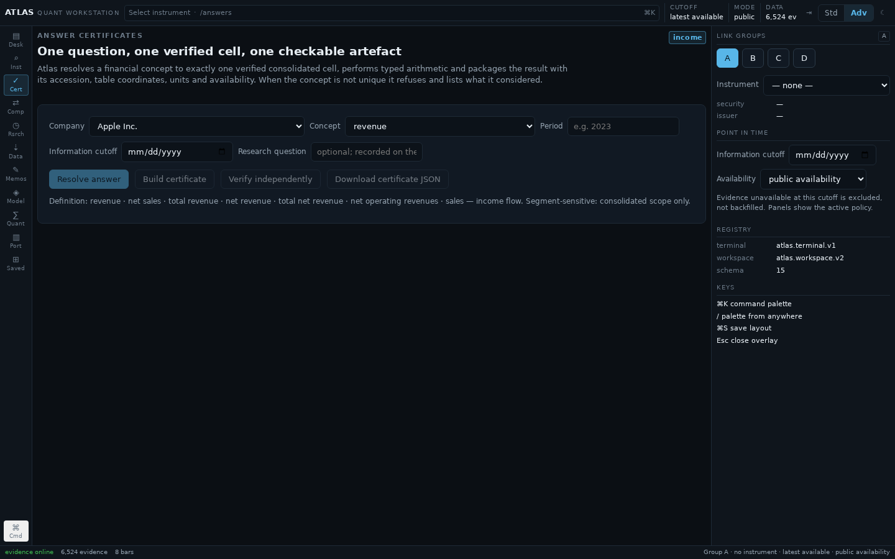
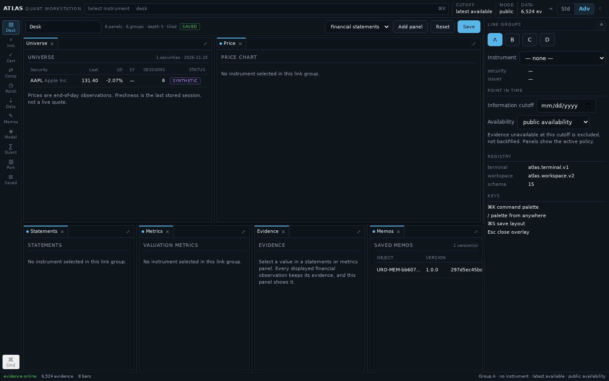

v0.2.0-beta.2 · experimental public preview
Financial research whose evidence, assumptions, calculations and conclusions can be inspected, challenged, verified and reproduced.
Atlas takes a financial question and returns one verified source cell, the typed arithmetic that produced the number, and an independent check of that arithmetic — or it refuses, with a code and the evidence it considered. Everything runs on your machine, from filings you can re-download.

A question, not a chat
Atlas is built around deterministic resolution rather than text generation: the same question against the same data returns the same cell, the same value and the same fingerprint.
What the release actually does
Measured in the release environment, not generalized.
- Ingests a real 10-K (Apple FY2026, 1.65 MB) into 60 parsed tables and 728 text units in 0.2 s from local bytes; answers total net sales as 478,834 with an independently verified certificate.
- Reproduces that answer identically on a second, freshly initialised installation: same value, same source-table hash, same document hash.
- Exports research memos to PDF and JSON with a content hash served alongside the bytes, and re-checks stored claims for change.
- Serves the same evidence over HTTP, the CLI, and an MCP server that the official
mcpPython SDK can discover and call.
What it deliberately is not
Stated on the landing page because it is stated in the product.
- Not a market-data terminal: no vendor prices are bundled, and none are redistributed.
- Not a forecasting product: valuations are assumption-explicit models, and scenarios are labelled as analyst inputs.
- Not proof of economic interpretation: a verified certificate says the number is what the filing says, not that your reading of it is right.
- Not multi-user or hosted: the API is local-only and unauthenticated by design, and must not be exposed publicly.
Proof you can re-run
Each claim below has a command and a committed report in the repository.

Offline acceptance
scripts/accept_phase10_4.py — 30/30 steps on a bundled synthetic 10-K: answer, certificate, verify, valuation, scenarios, comparison, memo, PDF, MCP and reproduction.
Real filing acceptance
scripts/accept_real_filing_phase10_5.py — 45 steps against Apple's live 10-K from SEC EDGAR, including arithmetic recomputed from the parsed table and a justified refusal.
MCP interoperability
tests/test_mcp_sdk_interop.py — the official mcp SDK initialises, discovers 14 tools, reads structured content, and sees a typed refusal rather than a fabricated answer.
Browser certification
web/e2e/phase10_5_certification.mjs — palette, certificate, refusal, comparison, onboarding, keyboard focus and mobile viewports, with screenshots committed.
Install in one minute
Python 3.12+. No Node.js, no database server, no API keys, no network for the demo.
python -m venv .venv
. .venv/bin/activate # Windows: .venv\Scripts\activate
pip install "atlas-quant[terminal]==0.2.0b2"
atlas demo # builds a synthetic filing and opens the terminal
Then, if you want a real company: atlas sec sync --cik 320193 --user-agent "Your Name you@example.org" followed by atlas serve.
Licensed under the Apache License 2.0 (Copyright 2026 Satwik Peddireddi). The licence covers Atlas's software only: no vendor market data is bundled, and third-party data keeps its own terms. Verify a download with sha256sum -c SHA256SUMS before installing.
Known limitations
The full list is in docs/KNOWN_LIMITATIONS.md. The ones that matter for a first look:
- Parsed table columns can be ambiguous when a filer puts currency symbols in their own columns; citations say so (
ambiguous_column_label) instead of guessing. - Availability is modelled for filing-level events: it is a bound, not an observed release instant, and every result labels which it is.
- Independent human evaluation and external usability testing have not been run. Nothing on this page depends on them.
- No vendor market data is bundled; price-dependent features need data you supply under your own licence.
Atlas is an experimental public preview for research and evaluation. It is not investment advice, not an institutional system, and makes no claim of guaranteed performance or hallucination-free output.